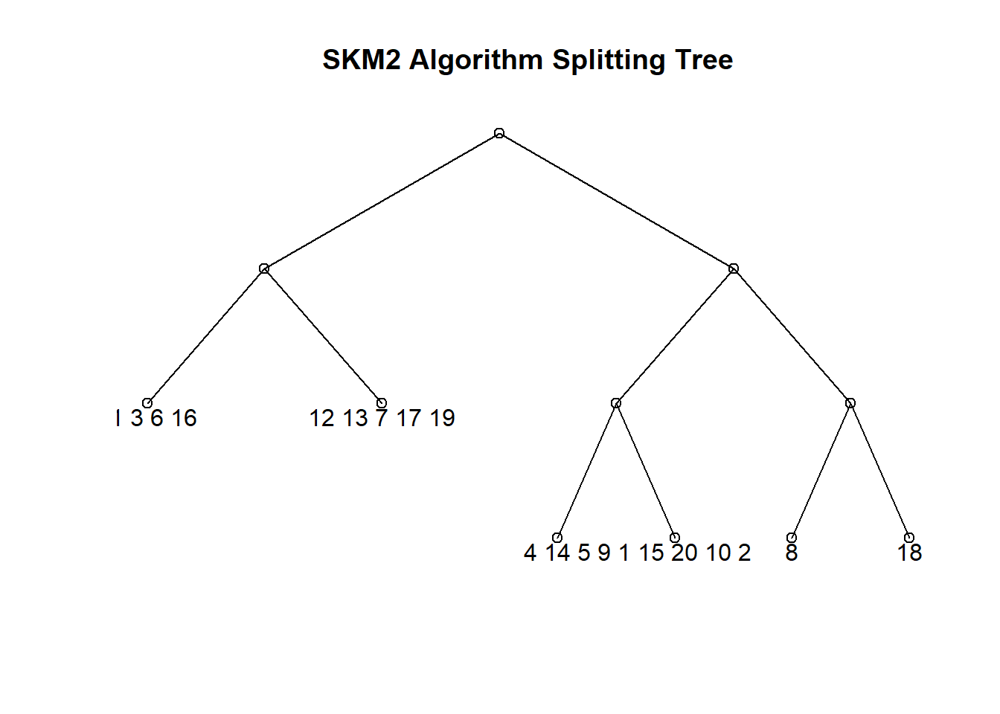
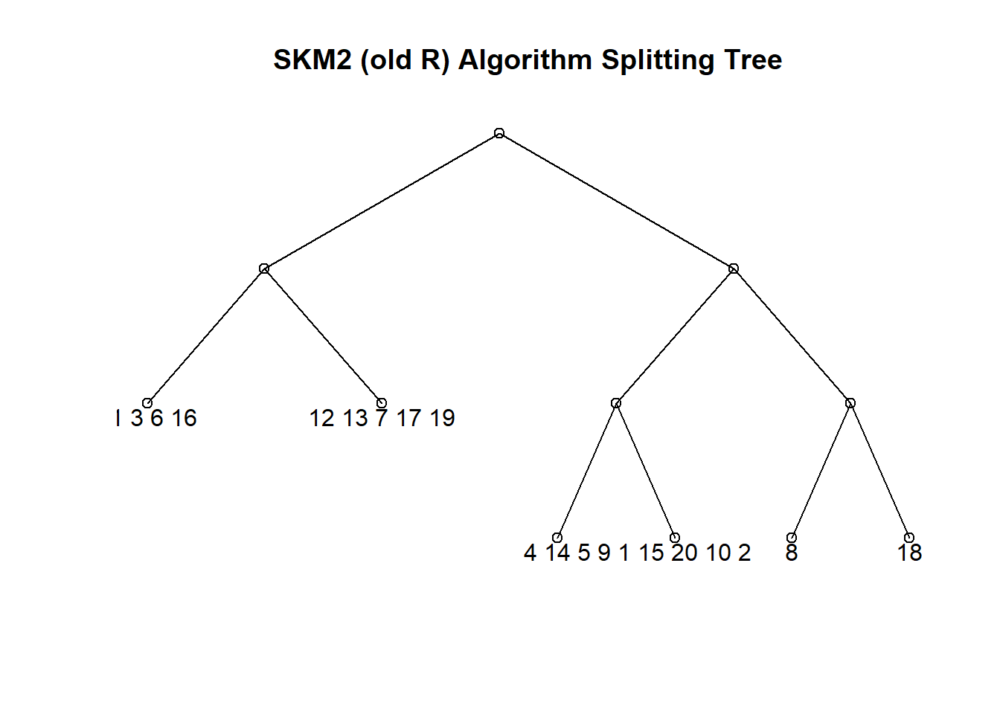
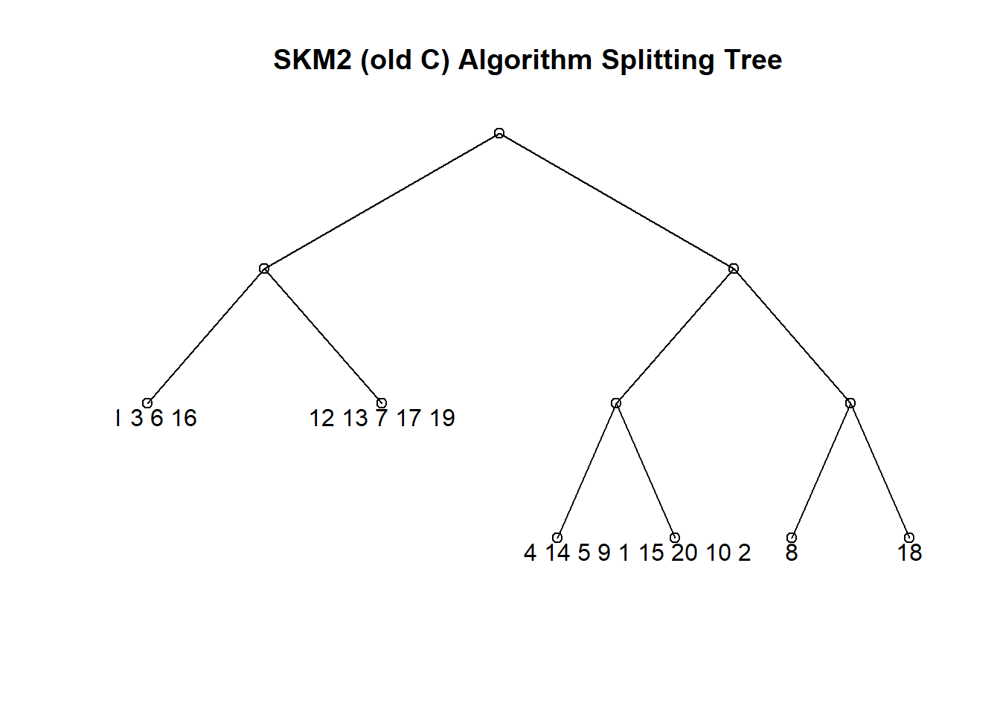
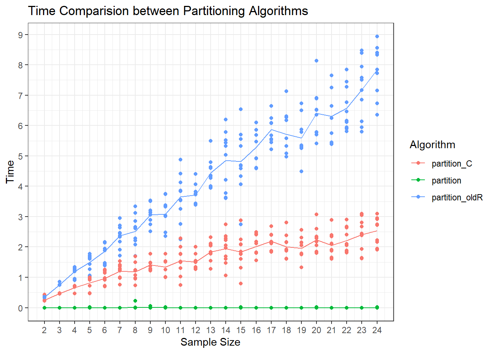

source('old_partition_algs.R')Speed Comparison between Developed partition algorithms
Summary
This document compares the speeds of the three partition algorithms that were developed over the course of the project for the SK4FGA package.
To do so, I have imported the older two algorithms in a source file within the folder and will describe their behavior here:
partition_oldR~ The first version ofpartitionthat was all coded in R, and for every split in the partition tree would estimate the significance of \(\lambda\) against an empirically estimated set of \(\lambda\)s from 10,000 simulations of arrays of size \(k\). The main bottleneck here is that for every split it would run the simulation and store the distribution in memory.partition_C~ The second version ofpartitionthat was about \(95\)% the same; only the heavy lifting part in the simulation was done in C++. This showed improved running times.partition~ The final version, and that which is implemented in the package. It uses a table of critical values estimated from 1 million randomly generated arrays of size \(2\rightarrow20\). The script used to generate this dataset is available in the GitHub Repo undergenerate_lambdas.R.- For arrays of size >20, it uses the Chi-Squared theoretical distribution as outlined in SKM1 in (Christopher M. Triggs and James M. Curran and John S. Buckleton and Kevan A.J. Walsh (1997) doi:10.1016/S0379-0738(96)02037-3 “The grouping problem in forensic glass analysis: a divisive approach”, Forensic Science International, 85(1), 1–14) which produces effectively the same result.
set.seed(123)
test = generate_indices(20, 5)part.fast = partition(test); plot(part.fast)
part.oldR = partition_oldR(test); attr(part.oldR, 'alg') = 'SKM2 (old R)'; plot(part.oldR)
part.C = partition_C(test); attr(part.C, 'alg') = 'SKM2 (old C)'; plot(part.C)
To test the speed of the algorithms, we can simulate arrays of varying sizes and time the algorithm takes to run on my computer.
#
# k = 2:24 # Size of arrays
# n = 10 # Number of random samples
#
# part_R.time = numeric(length(k)*n)
# part_C.time = numeric(length(k)*n)
# part_fast.time = numeric(length(k)*n)
#
# k = rep(k, each = n)
#
#
# print(paste('Number of tests:', length(k)))
#
# start.time = Sys.time()
#
# for (i in 1:length(k)) {
# if (i %% 5 == 0) {print(paste('Test', i))
# print(Sys.time() - start.time)}
#
# # Generate the Data with some variation.
# ri.test = generate_indices(k[i], .sd_multi = 5)
# part_R.time[i] = system.time(partition_oldR(ri.test))[3]
# part_C.time[i] = system.time(partition_C(ri.test))[3]
# part_fast.time[i] = system.time(partition(ri.test))[3]
# }
#
# finish.time = Sys.time()
#
# # Duration:
# finish.time - start.time
#
# # About 25 Minutes
#
# time_data = tibble(
# k,
# part_R.time,
# part_C.time,
# part_fast.time
# )
#
# write_csv(time_data, 'partition_times.csv')
time_data = read_csv('partition_times.csv')Rows: 230 Columns: 4
── Column specification ────────────────────────────────────────────────────────
Delimiter: ","
dbl (4): k, part_R.time, part_C.time, part_fast.time
ℹ Use `spec()` to retrieve the full column specification for this data.
ℹ Specify the column types or set `show_col_types = FALSE` to quiet this message.time_data# A tibble: 230 × 4
k part_R.time part_C.time part_fast.time
<dbl> <dbl> <dbl> <dbl>
1 2 0.390 0.430 0
2 2 0.330 0.25 0
3 2 0.350 0.230 0
4 2 0.330 0.230 0
5 2 0.330 0.220 0
6 2 0.340 0.240 0
7 2 0.360 0.230 0
8 2 0.320 0.230 0
9 2 0.340 0.220 0
10 2 0.340 0.230 0
# … with 220 more rowstime_data %>%
pivot_longer(cols = 2:4, names_to = 'alg', values_to = 'time') %>%
group_by(alg, k) %>%
mutate(mean_time = mean(time)) %>%
ggplot(aes(x = k, y = time, col = alg)) +
geom_point() +
geom_line(aes(y = mean_time)) +
theme_bw() +
labs(title = 'Time Comparision between Partitioning Algorithms',
x = 'Sample Size', y = 'Time', col = 'Algorithm') +
scale_color_manual(values = scales::hue_pal()(3), labels = c('partition_C', 'partition', 'partition_oldR')) +
scale_y_continuous(breaks = 0:10) +
scale_x_continuous(breaks = 2:24)